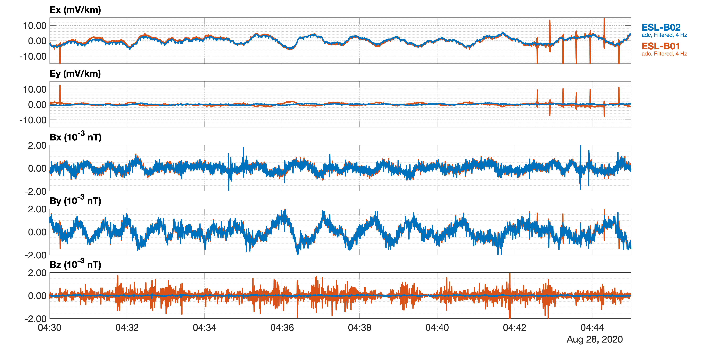
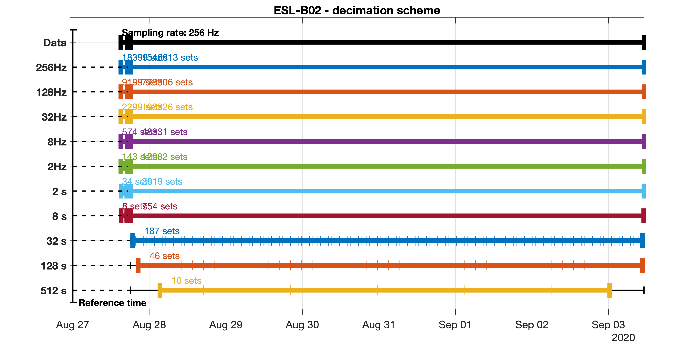
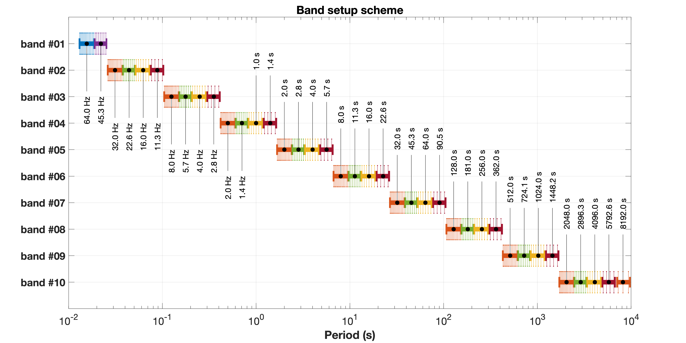

API documentation¶
MT¶
- class @MT.MT(varargin)¶
MTis a class definition to process magnetotelluric data.Syntax:
Initialize a project:
obj = MT(projectname,datetime(yyyy,mm,hh));
Import and delete sites:
MT(obj,'Import',sitename1,sitename2,..); MT(obj,'Delete',sitename1,sitename2,..);
Methods:
MT(obj,method); MT(obj,method,prop1,val1,prop2,val2,..);
Some but not all methods (e.g. not the ‘Import’ and ‘Delete’ methods) can also be invoked with:
obj.method; obj.method(,prop1,val1,prop2,val2,..);
Initialization:
To initialize a
MTobject, set the project name and a reference time. The project folder stores project data in anEMTSarchive structure. The reference time is adatetimeobject and is used for internal time referencing when required.Example:
MTmeasurements were carried out in October in Mongolia. All sites are stored in the project folder./MT.Mongolia.2020. To initialize the project, we use:obj = MT('/Volumes/INTENSO_4TB/MT.Mongolia.2020', datetime(2020,10,01));
MThandles times series using anEMTSobject, spectra files using anEMSPobject, and transfer functions using anEMTFobject. To see the default folder structure of time series in the project, typeobj.tsin the command window. To see the default folder structure of spectra in the project, typeobj.spin the command window.Importing sites:
To import site(s), use the expression:
MT(obj,'Import',localsitename); MT(obj,'Import',localsitename,basesitename); MT(obj,'Import',localsitename,basesitename,referencesitename); MT(obj,'Import',localsitename,[],referencesitename); MT(obj,'Import',sitename1,sitename2,sitename3,sitename4,..);
Example:
MT(obj,'Import','0000B');
Plot RunTimes
To plot runtimes of recordings, :
MT(obj,'PlotRunTimes');
Plot Sitemap
To plot site locations on a map, use:
MT(obj,'PlotSiteMap');
Methods and Properties:
- behave = None¶
EMBehaveobject to manage command line output
- bsratessp = None¶
vector that contains all available sampling rates of base site spectra
- bsratests = None¶
vector that collects all available sampling rates of base site time series
- emset = None¶
EMSettingsobject to store various processing controls
- estimate(varargin)¶
Estimate transfer functions
- import(varargin)¶
Read header information of all sites listed and store them in
obj.ts.site, an array ofEMTSobjects, andobj.sp.sitean array ofTimeFrequencyobjects.Input argument(s): comma-separated list of site names
Example:
obj.import('site01','site02',..);
- lsratessp = None¶
vector that contains all available sampling rates of local site spectra
- lsratests = None¶
vector that collects all available sampling rates of local site time series
- mtset = None¶
MTSettingsobject to store specific MT processing controls
- rsratessp = None¶
vector that contains all available sampling rates of ref site spectra
- rsratests = None¶
vector that collects all available sampling rates of ref. site time series
- sitenames = None¶
cell array of sites in the order as passed for import.
- sp = None¶
EMSPspectra object, providing access to spectra for imported sites
- spectra(varargin)¶
Compute spectra
- tf = None¶
EMTFtransfer functions object
- ts = None¶
EMTStime series object, providing access to time series for imported sites
MTSettings¶
- class @MTsettings.MTSettings¶
MTSettingshold options and settings for MT processing.MTSettingsproperties are set using the syntax:obj.setprops({prop1,val1,prop2,val2});
Valid property-value pairs are
'ImportTimeSeries',true Set this to false to avoid import of time series 'ImportSpectra',true Set this to false to avoid import of spectra 'UseSamplingRate','all' 'all', apply processing to all available sampling rates; [4096,256, ..], apply processing to specfied sampling rates (in Hz) only 'UseChannels','all' 'all', use all available channels; {'Ex','Ey', ..}, use specified channels only 'AutoCascade',true Use predefined cascade decimation schemes (in ./classes_data/Magnetotellurics/classes/@MT/private/*.mat) for given sampling rates. Set to false to avoid this behavior, but it is then recommended to define an appropriate decimation scheme; see EMTS, EMDecimate
Methods
- setprops(options)¶
Set properties of
obj, anMTSettingsobject.Input argument(s):
optionscell array of properties and valuesExample:
obj.setprops({'ImportSpectra',false});
Note: the list of property-value pairs is passed as one cell array. This should be changed in future versions. Setting these properties from outside of
MTSettingsuses a list of property-value pairs in standard form. For example, using anMTobject, the call is as follows:mt.setset('ImportSpectra',false)
EMTS¶
- class @EMTS.EMTS(varargin)¶
EMTSis a class definition to handle various kinds of time series stored in an archive structure. The default folder hierachy for time series data is:./projectname/sitename/ts/adc/recorder/meas*/*.*
A single
./meas*folder corresponds at a single run of continous data at a single sampling rate. Seprate runs are stored in separate./meas*folders. See the Recorder class definition for supported recording systems and how to organize time series data.EMTSincludes the following main functionalities:Importing and deleting sites from a project
Reading time series data
Filtering, decimating and resampling time series data
Converting time series data to
*.atsformatPlotting time series data
Computing Quick-look spectra
Plotting Qick-look spectra
Computing and storing cascaded spectra in
*.aspformat
EMTSdistinguishes between what we call a local site and a base site. The reasoning behind this naming stems from theory of linear systems, where predicted channels are taken from a local site, and the predicting channels are taken from a base site. For time series, we allow to access one local and one or multiple base site time series data. Local and base sites may have different sampling rates. Moreover, we introduce a tag, which specfies a certain processing stage. The default tag isadci.e. the data as they come the Recorder analog-digital converter. Processed data (e.g. converted data) are stored under the tagprocas the default, but more tags can be specfied.Syntax:
obj = EMTS(projectname,datetime(yyyy,mm,hh)); EMTS(obj,'Import',sitename1,sitename2,..); EMTS(obj,'Clear',sitename1,sitename2,..); EMTS(obj,method); EMTS(obj,method,prop1,val1,prop2,val2,..);
An alternative syntax for calling methods is as follows
obj.import(sitename1,sitename2,..); obj.clear(sitename1,sitename2,..); obj.method; obj.method(prop1,val1,prop2,val2,..);
We stick to the former syntax in this summary; the latter syntax is described below.
Initialization:
To initialize an
EMTSobject, set the project name and a reference time. The project folder stores project data in anEMTSarchive structure. The reference time is adatetimeobject and is used for internal time referencing when required.Example:
MT measurements were carried out in October in Mongolia. All sites are stored in the project folder
./MT.Mongolia.2020. To initialize the project, we use:ts = EMTS('/Volumes/INTENSO_4TB/MT.Mongolia.2020', datetime(2020,10,01));
To see the default folder structure of the project, type
tsin the command window.Note: Folder sperators in this example follow Linux/MacOS style. On Windows machines, use backslashes to separate folders.
Importing sites:
To import sites, use the expression:
EMTS(obj,'Import',sitename1,sitename2,..);
where an arbitrary number of sitenames can be provided. Importing means that the Recorder type and time series data are identified and all header information is read and stored in the property
obj.site.Example:
EMTS(ts,'Import','0000B','0050B','0150B');
To see the content of the project, type
ts. To see or access the content of a particular site, usets.site{isite}. To see or access the content of a particular run, usets.site{isite}(irun). Sites are ordered alphabetically, and runs are ordered according in their order of folders.Plot Runtimes:
Example:
EMTS(ts,'PlotRunTimes');
Deleting sites from the project:
To delete sites, use the expression:
EMTS(obj,'Delete',sitename1,sitename2,..);
where an arbitrary number of sitenames can be provided.
Global settings:
Global settings are stored in
obj.emset, an EMSettings object.Use the syntax:
EMTS(obj,'Set',prop1,val1,prop2,val2,..)
to set global settings. See EMSettings for a list of valid property-value pairs.
To set only the local site definition, use as a shorter alternative:
EMTS(obj,'SetLocal',prop1,val1,prop2,val2,..);
Valid properties are
Site,Tag,SamplingRatewith the values as describe above.To set only the base site definition, use as a shorter alternative:
EMTS(obj,'SetBase',prop1,val1,prop2,val2,..);
Valid properties are
Site,Tag,SamplingRatewith the values as describe above.Reading time series:
Time series are read for both local and base site(s), if existing, and stored in
obj.ltsandobj.bts, respectively.obj.ltsandobj.btsareEMTDataobjects. Use the syntax:EMTS(obj,'ReadData',prop1,val1,prop2,val2,..); EMTS(obj,'ReadData');
Accepted property-value pairs set the properties of EMSettings.
See also: EMSettings
Filtering time series:
Filtering of time series includes decimation, resampling, delay-filtering (not available), and others (not available). To set filter(s) and filter properties and apply the filter, use the syntax
EMTS(obj,'SetFilter',prop1,val1,prop2,val2,..); EMTS(obj,'FilterData');
An equivalent call is
EMTS(obj,'FilterData',prop1,val1,prop2,val2,..);
To remove any filter settings, use
EMTS(obj,'SetFilter','none');
Accepted property-value pairs set the properties of EMSettings and EMTFilter.
Once set, Filter settings are memorized. If any of the filter settings is set, all previous settings will be lost, e.g. setting a decimation factor will remove any resampling setting set previously; Multiple filters can be set and applied in the order of arguments provided, unless ‘Filterorder’ is specfied to set the order of the filters.
See also: EMSettings, EMTFilter
Converting time series *.ats-format:
For several reasons it can be useful to convert time series from onbe format into another. We support format conversion from any of the accepted data into
*.atsformat. To convert data, use the syntaxEMTS(obj,'WriteATS',prop1,val1,prop2,val2,..); EMTS(obj,'WriteATS');
Accepted property-value pairs set the properties of EMSettings and EMTFilter. Instead of passing property-value pairs directly, properties can also be set using the
obj.setset(.)andobj.setfilter(.)methods.The method reads and writes the data of the current local site only. If set, a filter (e.g. decimation, resampling) is applied before writing the data. Data are stored in the folder tree of the current site under the tag
obj.emset.outdir. The default tag isproc. The filesize of*.atsfiles can be specfied as the number of samples, which is set inobj.emset.filesize. The number of samples refer here to the original file; it means that for example a decimation filter applied to the data will reduce the file size accordingly.Note: The converted data will always start at a full second. If a sampleshift is set, then this sample-shift will be pplied and the data are truncated accordingly.
See also: EMSettings, EMTFilter
Cascade decimation and writing *.asp spectra files:
For the transformation of time series into spectral domain, we use a cascading decimation scheme and write the spectra for all decimation cascades into an
*.aspfile. To compute and write spectra, use the syntaxEMTS(obj,'WriteSpectra',prop1,val1,prop2,val2,..); EMTS(obj,'WriteSpectra');
Accepted property-value pairs set the properties of EMSettings, EMTFilter and EMDecimate. Instead of passing property-value pairs directly, properties can also be set using the
obj.setset(.),obj.setfilter(.)andobj.setdecimation(.)methods.The method reads and writes the data of the current local site only. If set, a filter (e.g. decimation, resampling) is applied before writing the data. Data are stored in the folder tree of the current site in
obj.emset.fcpath. The default folder for spectra isfc.Note: The time windows of spectra are aligned with respect to the reference time. Accordingly, some samples may (and will almost certainly) be truncated. If a sampleshift is set, then this sample-shift will be applied before time alignment.
See also: EMSettings, EMTFilter, EMDecimate,
Plotting time series:
Plotting time series is essential to get an idea of the data quality and the time synchronization. It is very useful to plot time series of synchronous recordings on top of each other. The
obj.plottimeseriesplot the time series of the selected local and base site(s) recordings for the given channels and given time window. Filtered time series can also be plotted, either jointly with the raw time series from file, or separate. To plot time series, use the syntaxEMTS(obj,'PlotTimeSeries',prop1,val1,prop2,val2,..); EMTS(obj,'PlotTimeSeries');
Accepted property-value pairs set the properties of EMSettings, EMTFilter and EMTPlot. Instead of passing property-value pairs directly, properties can also be set using the
obj.setset(.),obj.setfilter(.)andobj.setplot(.)methods.Example:
EMTS(ts,'PlotTimeSeries, ... 'LocalSite','ESL-B02','LocalTag','adc','LocalSamplingRate',256,... 'BaseSite','ESL-B01','BaseTag','adc','BaseSamplingRate',256,... 'Channel',{'Ex' 'Ey' 'Bx' 'By' 'Bz'},... 'Time',[datetime(2020,08,28,4,30,0) datetime(2020,08,28,4,45,0)],... 'DecimationFactor',[8 8],... 'Stage',{'Filtered'},... 'Scaling',[1 1 1/1000 1/1000 1/1000]);
This produces the following figure:
Time series example from sites ``ESL-B01 and`` ``ESL-B01``, recorded at 256 Hz and decimated by a factor of 64 in total. The data show some nice pulsations continuous (PC) as well as some spiky noise
Note: The default plot appearance is tuned to a MacOS screen and may not fit well onto other screens. Also, on Mac systems, the fontsize is differently defined than on Windows/Linux and therefore the fint may appear too large.
FontSizeis an EMTPlot property and can be set.Note: The order of the values provided to set the
Stageproperty controls also which of the stages is splotted first. Valid values areFileto plot the raw data, andFilteredto plot filtered data.See also: EMSettings, EMTFilter, EMTPlot,
Plotting Quick-look spectra:
Properties and Methods:
- clear(varargin)¶
Clear sites listed from
obj.sitethat have previously been imported; these sites will no longer be accessible..Input argument(s): comma-separated list of site names
Example:
obj.clear('site01','site02',..);
- clearbts()¶
clear data from base sites
- clearlts()¶
clear data from local site
- computespectra()¶
compute Fourier spectra local site <lsname>, sampling rate <lsrate>, local tag <ltag>, channels <usech> und time window <usetime>; applies EMTFilter if spectra are requested for filtered data
- emts_delete(sites)¶
clear sites from project
- filterdata(varargin)¶
Read time series for current local and base site(s) selection, filter them with filter settings and store them in
obj.ltsfilteredandobj.btsfiltered, respectively. All Parameters, if any, are passed toobj.setsetandobj.emfiltbefore reading and filtering the data.Input argument(s):
varargin, comma-separated list of property-value pairs.Example:
obj.filterdata(prop1,val1,prop2,val2,..);
For a list of Valid property-value pairs (including examples/defaults), see:
obj.setset(varargin) obj.setfilter(varargin);
- filterts()¶
filter data for given local site <lsname>, sampling rate <lsrate>, local tag <ltag>, channels <usech> und time window <usetime>
- import(varargin)¶
Read header information of all sites listed and store them in
obj.site, an array ofRecorderobjects.Input argument(s): comma-separated list of site names
Example:
obj.import('site01','site02',..);
- plotruntimes(varargin)¶
Plot runtimestime for current project. All Parameters, if any, are passed to
obj.setsetandobj.setplotbefore plotting the data.Input argument(s): comma-separated list of property-value pairs that are valid properties of EMSettings and EMTPlot,
Example:
ob.plotruntimes('LocalSite','0000B'); ob.plotruntimes;
For a list of Valid property-value pairs (including examples/defaults), see:
obj.setset(varargin); obj.setplot(varargin);
See also: EMSettings,:ref:emsettings, EMTPlot
- plotsitemap(varargin)¶
Plot sitemap for current project. All Parameters, if any, are passed to
obj.setsetandobj.setplotbefore plotting the data.Input argument(s): comma-separated list of property-value pairs that are valid properties of EMSettings and EMTPlot,
Example:
ob.plotsitemap('LocalSite','0000B'); ob.plotsitemap;
For a list of Valid property-value pairs (including examples/defaults), see:
obj.setset(varargin); obj.setplot(varargin);
See also: EMSettings,:ref:emsettings, EMTPlot
- plottimeseries(varargin)¶
Plot time series for current local and basesite(s). Both the raw data as they come from file as well the filtered data can be plotted. All Parameters, if any, are passed to
obj.setset,obj.setfilterandobj.setplotbefore plotting the data. if the time series have been not been read before, read is triggered. If the time series have not been filtered before, a filter is applied if set.Input argument(s): comma-separated list of property-value pairs that are valid properties of EMSettings, EMTFilter and EMTPlot,
Example:
ob.plottimeseries('LocalSite','0000B','LocalSamplingRate',4000,'LocalTag','adc', ... 'Channels',{'Ex' 'Ey' 'Bx' 'By' 'Bz'}, 'DecimationFactor',[8 8],'Time',[]);
For a list of Valid property-value pairs (including examples/defaults), see:
obj.setset(varargin); obj.setfilter(varargin); obj.setplot(varargin);
See also: EMSettings,:ref:emsettings,:ref:emtfilter,:ref:emtplot
- plotts(name)¶
— plot for given local site <lsname>, sampling rate <lsrate>, local tag <ltag>, channels <usech> und time window <usetime>
- quicklookspectra(varargin)¶
Write time series for current local site to
*.atsformat. All Parameters, if any, are passed toobj.setsetandobj.setfilterbefore reading and writing data. If a filter is set, it is applied. To remove any filter settings, use ??Input argument(s):
varargin, comma-separated list of property-value pairs.Example:
obj.quicklookspectra(prop1,val1,prop2,val2,..);
For a list of Valid property-value pairs (including examples/defaults), see:
obj.setset(varargin); obj.setfilter(varargin); obj.setspectra(varargin);
- readbts()¶
read data for given base sites <bsname>, sampling rates <bsrate>, base tag <btag>, channels <usech> und time window <usetime>
- readdata(varargin)¶
Read time series for current local and base site(s) selection and store them in
obj.ltsandobj.bts, respectively. All Parameters, if any, are passed toobj.setsetbefore reading the data and stored inobj.emset.obj.ltsis an array ofEMTDatahandle objects that collects the data for each run at the given sampling rate, andts.btsis a cell array ofEMTDatahandle objects, which collects the data for each base site and run. Empty entries correspond to runs that to not overlap withobj.emset.usetime.Input argument(s):
varargin, comma-separated list of property-value pairs.Example:
obj.readdata(prop1,val1,prop2,val2,..);
For a list of Valid property-value pairs (including examples/defaults), see:
ob.setset(varargin)
- readlts()¶
read data for given local site <lsname>, sampling rate <lsrate>, local tag <ltag>, channels <usech> und time window <usetime>
- setbase(varargin)¶
Specify base site. This is a shortcut to settings of
obj.setset(.), which refer to the base site(s) settings only.Input argument(s): comma-separated list of property-value pairs
Example:
obj.setbase('Site','0000B','Tag','adc','Samplingrate',500); obj.setbase('Site','none');
To specify multiple base sites, pass a cell array of sitenames to the
'Site'property, e.g.{'0000B','0050B',..}
- setdecimation(varargin)¶
Set values for the decimation scheme used for cascade decimation and spectral analysis. All Parameters are passed to EMDecimate and stored in
obj.emdec.Input argument(s): comma-separated list of property-value pairs that are valid EMDecimate properties and values.
Example:
obj.setdecimation('DecimationCascade',[1 4 4],'WindowLength',[1024 1024 1024],... 'Overlap',[256 256 256],'Prewhitening',[-1 -1 -1],'Taper','Hanning');
For a full list of parameters, see EMDecimate
- setfilter(varargin)¶
Set parameters for the filtering time series. All Parameters are passed to EMTFilter and stored in
obj.emfilt.Input argument(s): comma-separated list of property-value pairs that are valid EMTFilter properties and values.
'none'removes all filter settings and clears filtered data from memory (a EMTFilter method?).Example:
obj.setfilter('DecimationFactor',[4 4],'ResamplingFrequency',512,.... 'FilterOrder',{'DecimationFactor','ResamplingFrequency'}); obj.setfilter('none');
The order of passed property-value pairs matters, because filtering is executed in this order. The order can be overwritten by explicitly specfifying the order of filter applications
For a full list of parameters, see EMTFilter
- setlocal(varargin)¶
Specify local site. This is a shortcut to settings of
obj.setset(.), which refer to the local site settings only.Input argument(s): comma-separated list of property-value pairs
Example:
obj.setlocal('Site','0000B','Tag','adc','Samplingrate',500); obj.setlocal('Site','none');
- setplot(varargin)¶
Set parameters for plotting time series. All Parameters are passed to
EMTPlotand stored in obj.emplotInput argument(s):
varargin, comma-separated list of property-value pairsExample:
obj.set(prop1,val1,prop2,val2,..);
Valid property-value pairs are settings to
EMTPlot
- setset(varargin)¶
Set global settings and store in obj.emset, an EMSettings object.
Input argument(s): comma-separated list of property-value pairs that are valid EMSettings properties and values. If any of values is
none, all time series held in memory are cleared by calling the methodsobj.clearltsandobj.clearbts.Example:
obj.set('LocalSite','0000B','LocalTag','adc','LocalSamplingrate',500,... 'BaseSite','0050B','BaseTag','adc','BaseSamplingrate',500,... 'Channel',{'Ex','By'},'Time',[]);
For a full list of parameters, see EMSettings
- setspectra(varargin)¶
Set values for the quick-look spectral estimation scheme. All Parameters are passed to
EMTSpectraand stored in obj.emspec.Input argument(s): comma-separated list of property-value pairs that are valid EMTSpectra properties and values.
Example:
obj.set('WindowLength',2^14,'Overlap',2^12,'Taper','Hanning','Prewhitening',-1,... 'Stage',{'file','filtered'});
For a full list of parameters, see EMTSpectra
- writeats(varargin)¶
Write time series for current local site to
*.atsformat. All Parameters, if any, are passed toobj.setsetandobj.setfilterbefore reading and writing data. If a filter is set, it is applied. To remove any filter settings, use ??Input argument(s):
varargin, comma-separated list of property-value pairs.Example:
obj.writeats(prop1,val1,prop2,val2,..);
For a list of Valid property-value pairs (including examples/defaults), see:
obj.setset(varargin); obj.setfilter(varargin);
- writelts()¶
write data for given local site <lsname>, sampling rate <lsrate>, local tag <ltag>, channels <usech> und time window <usetime> NOTE: EMTFilter is applied if set!
- writeltsspec()¶
write spectra for given local site <lsname>, sampling rate <lsrate>, local tag <ltag>, channels <usech> und time window <usetime> NOTE: EMTFilter is applied before spectra computation if set!
- writespectra(varargin)¶
Write cascaded spectra for current local site to
*.atsformat. All Parameters, if any, are passed toobj.setset,obj.setfilterandobj.setdecimationbefore reading data and computing and writing spectra. If a filter is set, it is applied. To remove any filter settings, use ??Input argument(s):
varargin, comma-separated list of property-value pairs.Example:
obj.writespectra(prop1,val1,prop2,val2,..);
For a list of Valid property-value pairs (including examples/defaults), see:
obj.setset(varargin); obj.setfilter(varargin); obj.setdecimation(varargin);
{kind=link}
EMSP¶
- class @EMSP.EMSP(varargin)¶
EMSPis a class definition to handle time-frequency spectra computed with EMTS and stored in an archive structure. The default folder hierachy for spectra data is:./projectname/sitename/fc/adc/recorder/meas*/*.*
At the moment, only Fourier spectra are supported, but future versions may include wavelet transforms or other time-frequency representation as well.
A single
./meas*folder corresponds at a single run of continous data at a single sampling rate. Seprate runs are stored in separate./meas*folders. See the Recorder class definition for supported recording systems and how to organize time series data.EMSPincludes the following main functionalities:Importing and deleting sites from a project
Reading spectra
Plotting spectra
…
Computing transfer functions from spectra
EMSPdistinguishes between what we call a local site, a base site and a reference site. The reasoning behind this naming stems from theory of linear systems, where output channels (or predicted channels), taken from the local site, are lineraly related to the input channels (or predicting channels), taken from a base site, and where the noise bias in the input channels can be mitigated by incorporating reference channels, which recorded the same signal but where the noise is uncorrelated. For time series, we allow to access one local but one or multiple base site(s) and reference site(s) at a time.Note
It is important that all spectra have been computed using with the same reference time (see EMTS, MT, …) and that the same cascade decimation scheme has been applied to time series with equal sampling rates. If these conditions are not fulfilled, it is not possible to align spectral windows and thus not possible to determine inter-station transfer functions or to perform remote reference processing.
Syntax:
obj = EMSP(projectname,datetime(yyyy,mm,hh)); EMSP(obj,'Import',sitename1,sitename2,..); EMSP(obj,'Clear',sitename1,sitename2,..); EMSP(obj,method); EMSP(obj,method,prop1,val1,prop2,val2,..);
An alternative syntax for calling methods is as follows
obj.import(sitename1,sitename2,..); obj.clear(sitename1,sitename2,..); obj.method; obj.method(prop1,val1,prop2,val2,..);
We stick to the former syntax in this summary; the latter syntax is described below.
Initialization:
To initialize an
EMSPobject, set the project name and a reference time. The project folder stores project data in anEMSParchive structure. The reference time is adatetimeobject (Because the reference time is also stored in the*.asp, it is validated during import to avoid the above noted issues (is it done?)).Example:
MT measurements were carried out in October in Mongolia. All sites are stored in the project folder
./MT.Mongolia.2020. Spectra have been caluclated using EMTS. To initialize the project, we use:sp = EMSP('/Volumes/INTENSO_4TB/MT.Mongolia.2020', datetime(2020,10,01));
To see the default folder structure of the project, type
spin the command window.Note: Folder sperators in this example follow Linux/MacOS style. On Windows machines, use backslashes to separate folders.
Importing sites:
To import sites, use the expression:
EMSP(obj,'Import',sitename1,sitename2,..);
where an arbitrary number of sitenames can be provided. Importing means that the
TimeFrequencydata type and spectral data are identified and all header information is read and stored in the propertyobj.site.Example:
EMSP(sp,'Import','0000B','0050B','0150B');
To see the content of the project, type
sp. To see or access the content of a particular site, usesp.site{isite}. To see or access the content of a particular run, usesp.site{isite}(irun). Sites are ordered alphabetically, and runs are ordered according in their order of folders.Deleting sites from the project:
To delete sites, use the expression:
EMSP(obj,'Delete',sitename1,sitename2,..);
where an arbitrary number of sitenames can be provided.
Global settings:
Global settings are stored in
obj.emset, an EMSettings object.Use the syntax:
EMSP(obj,'Set',prop1,val1,prop2,val2,..)
to set global settings. See EMSettings for a list of valid property-value pairs.
To set only the local site definition, use as a shorter alternative:
EMSP(obj,'SetLocal',prop1,val1,prop2,val2,..);
Valid properties are
Site,Tag,SamplingRatewith the values as describe above.To set only the base site definition, use as a shorter alternative:
EMSP(obj,'SetBase',prop1,val1,prop2,val2,..);
Valid properties are
Site,Tag,SamplingRatewith the values as describe above.To set only the reference site definition, use as a shorter alternative:
EMSP(obj,'SetReference',prop1,val1,prop2,val2,..);
Valid properties are
Site,Tag,SamplingRatewith the values as describe above.Plot RunTimes:
To see the runtimes of the spectra of all imported sites, use the method:
EMSP(sp,'PlotRuntimes',prop1,val1,..); EMSP(sp,'PlotRuntimes');
See EMFPlot for a list of valid property-value pairs to control the plot appearance.
Example:
View decimation scheme:
To see the decimation scheme of selected lcoal and base site runs, use the method:
EMSP(sp,'PlotDecimationScheme',prop1,val1,..); EMSP(sp,'PlotDecimationScheme');
See EMFPlot for a list of valid property-value pairs to control the plot appearance. The method also accepts Proeprty-Value pairs to set :ref:’emsettings’ properties, e.g. specifiying local nd base site selections.
Example:
To plot the decimation scheme for the \(256\, Hz\) runs of the imported site
ESL-B01, use the syntax:EMSP(sp,'PlotDecimationScheme',... 'LocalSite','ESL-B02','LocalSamplingRate',256,'LocalTag','adc');
This produces the following figure:
figure caption
Band Setup:
Global settings are stored in
obj.emset, an EMSettings object.2-do
complete this doc.
method to call bandsetup of type obj.setband()
method to call plotting routine of bandsetup scheme
** Methods and properties: **
- clear(varargin)¶
Clear sites listed from
obj.sitethat have previously been imported; these sites will no longer be accessible..Input argument(s): comma-separated list of site names
Example:
obj.clear('site01','site02',..);
- import(varargin)¶
Read header information of all sites listed and store them in
obj.site, an array ofTimeFrequencyobjects.Input argument(s): comma-separated list of site names
Example:
obj.import('site01','site02',..);
- plotemdec(varargin)¶
Plot decimation scheme of current local and base site runs
Input argument(s): comma-separated list of property-value pairs to set EMFPlot plot appearance and EMSettings global settings
Example(s):
obj.plotemdec(obj;
See also: EMFPlot, EMSettings
- plotruntimes(varargin)¶
Plot runtimes of all sites in project
Input argument(s): comma-separated list of property-value pairs to set the EMFPlot plot appearance
Example(s):
obj.plotruntimes(obj;
See also: EMFPlot
- plotsitemap(varargin)¶
Plot sitemap for current project. All Parameters, if any, are passed to
obj.setsetandobj.setplotbefore plotting the data.Input argument(s): comma-separated list of property-value pairs that are valid properties of EMSettings and EMFPlot,
Example:
ob.plotsitemap('LocalSite','0000B'); ob.plotsitemap;
For a list of Valid property-value pairs (including examples/defaults), see:
obj.setset(varargin); obj.setplot(varargin);
See also: EMSettings,:ref:emsettings, EMFPlot
- setbandsetup(varargin)¶
Set band setup scheme for frequency binning. Values are stored in
obj.embs(.)Input argument(s): comma-separated list of property-value pairs
Example(s):
obj.setbandsetup('Scheme','MT','Spacing','0.5','Bandwidth',0.5); obj.setbandsetup('Scheme','CSEM','T0',1/98,'Spacing','0.5','Bandwidth',0.5);
To apply the current scheme to the current runs of local, base and reference site recordings, use the methods
obj.bslsp; obj.bsbsp; obj.bsrsp;
This will store the band setups along with the respective runs in the properties
obj.lsite.embs,obj.bsite.embsandobj.rsite.embs. Runs at other sampling rates are not affected.See also: EMBandSetup
- setbase(varargin)¶
Specify base site. This is a shortcut to settings of
obj.setset(.), which refer to the base site(s) settings only.Input argument(s): comma-separated list of property-value pairs
Example:
obj.setbase('Site','0000B','Tag','adc','Samplingrate',500); obj.setbase('Site','none');
To specify multiple base sites, pass a cell array of sitenames to the
'Site'property, e.g.{'0000B','0050B',..}
- setlocal(varargin)¶
Specify local site. This is a shortcut to settings of
obj.setset(.), which refer to the local site settings only.Input argument(s): comma-separated list of property-value pairs
Example:
obj.setlocal('Site','0000B','Tag','adc','Samplingrate',500); obj.setlocal('Site','none');
- setplot(varargin)¶
Set plotproeprties for plotting spectra. Values are stored in
obj.emplot(.),Input argument(s): comma-separated list of property-value pairs
Example:
obj.setplot(..);
- setreference(varargin)¶
Specify refrence site. This is a shortcut to settings of
obj.setset(.), which refer to the reference site(s) settings only.Input argument(s): comma-separated list of property-value pairs
Example:
obj.setreference('Site','0000B','Tag','adc','Samplingrate',500); obj.setreference('Site','none');
To specify multiple reference sites, pass a cell array of sitenames to the
'Site'property, e.g.{'0000B','0050B',..}
- setset(varargin)¶
Set global settings and store in obj.emset, an EMSettings object.
Input argument(s): comma-separated list of property-value pairs that are valid EMSettings properties and values. If any of values is
none, all time series held in memory are cleared by calling the methodsobj.clearlsp,obj.clearbspandobj.clearrsp.Example:
obj.set('LocalSite','0000B','LocalTag','adc','LocalSamplingrate',500,... 'BaseSite','0050B','BaseTag','adc','BaseSamplingrate',500,... 'Channel',{'Ex','By'},'Window',[]);
For a full list of parameters, see EMSettings
- writetf()¶
{kind=link}
EMTF¶
- class @EMTF.EMTF(varargin)¶
EMTFis a class definition to handle transfer functions computed with EMSP and stored in an archive structure. The default folder hierachy for transfer functions is:./projectname/sitename/tf/adc/recorder/*.*
EMTFincludes the following main functionalities:Importing and deleting sites from a project
Reading transfer functions
Plotting transfer functions and diagnostic parameters
Writing transfer functions
…
Syntax:
obj = EMTF(projectname); EMTF(obj,'Import',sitename1,sitename2,..); EMTF(obj,'Clear',sitename1,sitename2,..); EMTF(obj,method); EMTF(obj,method,prop1,val1,prop2,val2,..);
An alternative syntax for calling methods is as follows
obj.import(sitename1,sitename2,..); obj.clear(sitename1,sitename2,..); obj.method; obj.method(prop1,val1,prop2,val2,..);
We stick to the former syntax in this summary; the latter syntax is described below.
Initialization:
To initialize an
EMTFobject, set the project name. The project name is a folder that stores project data in anEMTFarchive structure.Example:
MT measurements were carried out in October in Mongolia. All sites are stored in the project folder
./MT.Mongolia.2020. Transfer functions have been caluclated using EMSP. To initialize the project, we use:tf = EMTF('/Volumes/INTENSO_4TB/MT.Mongolia.2020');
To see the default folder structure of the project, type
tfin the command window.Note: Folder sperators in this example follow Linux/MacOS style. On Windows machines, use backslashes to separate folders.
Importing sites:
To import sites, use the expression:
EMTF(obj,'Import',sitename1,sitename2,..);
where an arbitrary number of sitenames can be provided. Importing means that transfer function data are identified, read and stored in the property
obj.site.Example:
EMTF(tf,'Import','0000B','0050B','0150B');
To see the content of the project, type
tf. To see or access the content of a particular site, usetf.site{isite}. To see or access the content of a particular run, usetf.site{isite}(irun). Sites are ordered alphabetically, and runs are ordered according in their order of folders.Deleting sites from the project:
To delete sites, use the expression:
EMTF(obj,'Delete',sitename1,sitename2,..);
where an arbitrary number of sitenames can be provided.
Global settings:
Global settings are stored in
obj.emset, an EMSettings object.Use the syntax:
EMTF(obj,'Set',prop1,val1,prop2,val2,..)
to set global settings. See EMSettings for a list of valid property-value pairs.
To set only the local site definition, use as a shorter alternative:
EMTF(obj,'SetLocal',prop1,val1,prop2,val2,..);
Valid properties are
Site,Tag,SamplingRatewith the values as describe above.To set only the base site definition, use as a shorter alternative:
EMTF(obj,'SetBase',prop1,val1,prop2,val2,..);
Valid properties are
Site,Tag,SamplingRatewith the values as describe above.To set only the reference site definition, use as a shorter alternative:
EMTF(obj,'SetReference',prop1,val1,prop2,val2,..);
Valid properties are
Site,Tag,SamplingRatewith the values as describe above.Transfer function files that meet the criteria are accessible through:
obj.lsite;
Plot Settings
To set the appearance of transfer function plots, use:
EMTF(obj,'SetPlot',val1,prop1,val2,pro2, ..)
See EMTFPlot for valid property value pairs.
Plot MTSounding
A standard plot for MT data plots a sounding curve vs. frequency. App. resitivity and phase values, and if existing, induction vectors are plotted. Plotting is accomplished through the class EMTFPlot.
EMTF(obj,'PlotMTSounding',prop1,val1,prop2,val2,..); EMTF(obj,'PlotMTSounding'
- clear(varargin)¶
Clear sites listed from
obj.sitethat have previously been imported; these sites will no longer be accessible..Input argument(s): comma-separated list of site names
Example:
obj.clear('site01','site02',..);
- import(varargin)¶
Read header information of all sites listed and store them in
obj.site, an array ofTimeFrequencyobjects.Input argument(s): comma-separated list of site names
Example:
obj.import('site01','site02',..);
- plotmtsounding(varargin)¶
Plot MT sounding for current site. All Parameters, if any, are passed to
obj.setsetandobj.setplotbefore plotting the data.Input argument(s): comma-separated list of property-value pairs that are valid properties of EMSettings and EMTPlot,
Example:
ob.plotruntimes('LocalSite','0000B'); ob.plotruntimes;
For a list of Valid property-value pairs (including examples/defaults), see:
obj.setset(varargin); obj.setplot(varargin);
See also: EMSettings,:ref:emsettings, EMTPlot
- setbase(varargin)¶
Specify base site. This is a shortcut to settings of
obj.setset(.), which refer to the base site(s) settings only.Input argument(s): comma-separated list of property-value pairs
Example:
obj.setbase('Site','0000B','Tag','adc','Samplingrate',500); obj.setbase('Site','none');
To specify multiple base sites, pass a cell array of sitenames to the
'Site'property, e.g.{'0000B','0050B',..}
- setlocal(varargin)¶
Specify local site. This is a shortcut to settings of
obj.setset(.), which refer to the local site settings only.Input argument(s): comma-separated list of property-value pairs
Example:
obj.setlocal('Site','0000B','Tag','adc','Samplingrate',500); obj.setlocal('Site','none');
- setplot(varargin)¶
Set plotproprties for plotting transfer functions. Values are stored in
obj.emplot(.), which refer to the base site(s) settings only.Input argument(s): comma-separated list of property-value pairs
Example:
obj.setbase();
- setreference(varargin)¶
Specify reference site. This is a shortcut to settings of
obj.setset(.), which refer to the base site(s) settings only.Input argument(s): comma-separated list of property-value pairs
Example:
obj.setreference('Site','0000B','Tag','adc','Samplingrate',500); obj.setreference('Site','none');
- setset(varargin)¶
Set global settings and store in obj.emset, an EMSettings object.
Input argument(s): comma-separated list of property-value pairs that are valid EMSettings properties and values.
Example:
obj.set('LocalSite','0000B','LocalTag','adc','LocalSamplingrate',500,... 'BaseSite','0050B','Tag','adc',);
For a full list of parameters, see EMSettings
- writeedi()¶
Set global settings and store in obj.emset, an EMSettings object.
Input argument(s): comma-separated list of property-value pairs that are valid EMSettings properties and values.
Example:
obj.set('LocalSite','0000B','LocalTag','adc','LocalSamplingrate',500,... 'BaseSite','0050B','Tag','adc',);
For a full list of parameters, see EMSettings
EMSettings¶
- class @EMSettings.EMSettings¶
EMSettingsis a class definition that holds various settings on how to handle EM time series.EMSettingsproperties are set using the syntax:obj.setprops({prop1,val1,prop2,val2});
Valid property-value pairs are
'Channel',{'Ex','Ey',...} cell array of channel identifiers, selecting a subset of channels. Leave empty to use all channels. 'Time',[datetime(2020,10,16,06,00,00),datetime(2020,10,16,12,00,00)] two-component datetime vector to specify start and stoptime of data to be read. If the time series do not overlap with the time window specified, no data are read. Leave empty to use all data. 'LocalSite','0000B' name of the local site. 'none' removes the definition of the local site. 'LocalTag','adc' tag specifying local site data to be read. This is the subfolder of the ./project/localsitename/ts directory in which the data reside. 'LocalSamplingRate',500 sampling rate in Hz of local site data to be read. 'BaseSite',{'0050B','0150B'} name of base site(s). A single base site can be specified as a char array. Multiple base sites are passed as a cell array of names. 'none' removes the definition of the base site(s). 'BaseTag','adc' tag specifying base site(s) data to be read. This is the subfolder of the ./project/vasesitename/ts directory in which the data reside. 'BaseSamplingRate',500 sampling rate in Hz of base site(s) data to be read. To specify multiple sampling rates, provide them in an array. 'DataPath',{./adc/Lemi/run*, ./proc/ADU/meas*}: non-default path fragment to search for data during import. This applies to the import of data only, and must be set accordingly before importing data. Default is defined in EMSettings. 'ReadExtraData',4096 Number of samples to memorizes before and after 'Time', if any. Useful for filtering. Note: the number of extra data should be a multiple of the sampling rate. 'OutDir','./proc' path fragment to store converted time series as *.ats data. This is only applicable for writing data 'FileSize',44236800 Number of samples to write into one ats file. Default is 512*3600*4, which would correspond to 4 hours at a sampling rate of 512 Hz. 'FcPath','./fc' path fragment to store spectra data, e.g. ./fc (CALL NOT IMPLEMENTED) 'TO BE COMPLETED'
Methods:
- setprops(options)¶
Set properties of
obj, anEMSettingsobject.Input argument(s):
optionscell array of properties and valuesExample:
obj.setprops({'Site','0000B','Tag','adc','Samplingrate',500}); obj.setprops({'Site','none'});
Note: the list of property-value pairs is passed as one cell array. This should be changed in future versions. Setting these propertie sfrom outside of
EMSettingsuses a list of property-value pairs in standard form. For example, using anEMTSobject, local site defintions are set as follows:ts.setset('Site','0000B','Tag','adc','Samplingrate',500)
Settings of some values (e.g. sitenames, sampling rates, channels, etc) will require re-reading of data. This will also set
obj.localhaschanged,obj.basehaschanged,obj.refhaschangedto true to indicate that re-reading of data is required.
EMTData¶
- class @EMTData.EMTData(varargin)¶
- Nf = None¶
number of frequencies
- Nk = None¶
number of taper
- Nwin = None¶
number of spectral windows
- T = None¶
Time stamps of spectrogram
- aspheader = None¶
header of spectra file
- atsheader = None¶
time stamps
- behave = None¶
emset EMSettings
- calpath = None¶
— T-DATA —
- ct = None¶
central times of time windows relative to startofdata
- data = None¶
Nch x Nsmp time series
- dataafter = None¶
remember some data (emset.beforeandafter samples) after endofdtata
- lat = None¶
tag
- lsb = None¶
remember some data (emset.beforeandafter samples) before startofdtata
- name = None¶
name of site
- reftime = None¶
sample interval
- spectracal = None¶
frequencies in spectra
- spectraphys = None¶
spectrogram of dataphys
- srate = None¶
— Timing —
EMTFilter¶
- class @EMTFilter.EMTFilter(varargin)¶
- behave = 'true'¶
logical variable, true if any of the settings is changed
- callfilter(ts)¶
if nothing to filter, then EMTFilter will just copy the data as they are into tsfiltered
- delay = '0'¶
not yet supported
- notch = '0'¶
not yet supported
- order = None¶
perform these operations in this order
- resampling = '0'¶
not yet supported
EMTPlot¶
EMDecimate¶
EMBandSetup¶
- class @EMBandSetup.EMBandSetup(varargin)¶
EMBandSetupis a class definition that defines the binning of Fourier coeffcients for the purpose of regression.Methods of
EMBandSetupare invoked by methods of EMSP and maybe other classes but usually not from the command line or a processing scripts.Syntax:
obj.setprops({prop1,val1,prop2,val2}); obj(emdec);
obj.setpropssets the properties ofobj. Valid property-value pairs are'scheme','MT' char identifier, one out 'MT', 'CSEM','FC','File'; 'MT' uses all fourier coeffcients within each estimation band; 'CSEM' uses only the harmonics of the fundamental frequency, which fall within each estimation band; 'FC' uses all fourier coeffcients within the decimation band. This is for instance useful to determine coherencies. 'File' reads the binning scheme from file. 'bscfg','filename' filename to read (or write) bandsetup configuration 'bandwidth',0.5 width of frequency band on log2 axis, centered at the estimation frequency. All fourier coefficients within this band are used (binned) to estimate the response function axis that is used to determine 'spacing',0.5 spearation of estimation frequencies on log2 axis 'T0', [] Fundamental source period, only for 'CSEM' 'harmonics','2' 2: use either every odd harmonic; 1: ise every even and odd harmonic.
obj(emdec)computes the binning scheme for the decimation levels as defined inemdec, an EMDecimate object. The binning is stored as follows:obj.f cell array of frequencies for each decimation level. For decimation level id, frequencies of fourier coefficients obj.f{id} obj.fcoef cell array of indices into frequencies used for the estimation of targetfrequency. For decimation level id and target frequency it within this decimation level, the coefficients used are obj.fcoef{id}{it}. The corresponding frequencies are obj.f{fi}(obj.fcoef{id}{it}); obj.ftarget cell array of target fequencies. For decimation level id and target frequency it within this decimation level, the targetfrequency is obj.ftarget{id}{ib}
A typical band setup for a magnetotelluric ~3-day recording, generated with:
obj(emdec); obj.plot
is shown below. It used 128 sample long windows at each estimation band (decimation level), consecutively decimated by a factor of 4 starting from the original sampling rate of \(128\,Hz\) (except for the first decimation step, which was a factor of 2.)
- bs_mt(emdec)¶
Default band setup for MT applications
Input argument(s): emdec, an EMDecimate object that holds information about teh cascade decimation scheme of the current spectra.
Example:
obj.bs_mt(emdec);
{kind=link}
EMTSpectra¶
- class @EMTSpectra.EMTSpectra(varargin)¶
EMTSpectra Compute STFT of EM time series
Short time fourier transforms (STFT) are evaluated using the matlab spectrogram function und using specified prewhitening, nfft, (=)windowlength, overlap and taper. The computed spectrogram is of dimension Nch x Nf x Nsets x Nk and scaled to account for windowlength and taper power. Output is therefore in fieldunits/sqrt(Hz). For multi-taper spectral analysis, the independent spectral estimates are stored along the forth dimension Nk.
Spectra are evaluated for time series data in physical units as stored in an EMTData object. It means that e.g. magnetic field time series are multiplied by the LSB and divided by the sensor sensitivity of the respective magnetometer, and electric field data are multiplied by the LSB and divided by dipole length (in km), and current data are multiplied by the LSB and divided by the sensitivity of teh current clamp. Sensitivities of sensors are predefined in EMChannels.
To calibrate spectra, EMCalibrate is invoked. EMCalibrate works on EMTData and EMFData objects, and divides spectra as computed by EMTSpectra by the frequency dependent calibration function divided by the respective sensor sensitivity. It means that the sensor sensitivity as defined in EMChannels cancels out again.
EMTSpectra(TS) computes spectra of time series stored in TS, an EMTS object. STFT estimation is applied to both local and base site time series, TS.ltsfiltered and TS.btsfiltered, if existing. Spectra are stored as properties of the respective EMTData object in spectraphys.
EMTSpectra(TS,NAME,LIST), where NAME specifies the type of data to be filtered. Possible data types are:
(1) ‘Set’: Set STFT parameters as listed in in LIST. EMTSpectra(TS,’Set’,’none’) removes all spectra (2) ‘Compute’: Apply STFT to time series, using settings as set, or as listed in LIST.
EMTSpectra(TS,NAME,LIST), where LIST is list of property-value pairs. Property names and values are: (1) ‘Windowlength’: length of FFT in samples (2) ‘Overlap’: overlap of windows, in samples (3) ‘Taper’: name of taper window (‘hanning’, ‘dpss’) (4) ‘Prewhiteing’: prewhitening procedure (5) ‘Stage’: Switch to select between raw data (‘File’), filtered data as filtered … through EMTFilter (‘Filtered’) and otherwise processed data (‘Processed’); To estimate spectra for multiple processing stages in one run, provide a cel array of stages, e.g. {‘File’,’Filtered’}.
EMTSpectra(TS,NAME,LIST) accepts both an EMTS or a EMTData object TS. In the latter case, all relevant property-value pairs MUST be provided as property-value pairs..
EXAMPLEs:
EMTSpectra(ts,’Set’,’Nfft’,4096,’Overlap’,1024); set fft length to 4096 samples and overlap to 1024. EMTSpectra(ts,’Compute’); Apply filter on time series. An equivalent calling sequence is: EMTSpectra(ts,’Compute’,’Nfft’,4096,’Overlap’,1024); ts is here either an EMTS (not implemented) or an EMTData object
See also: EMTS, EMTData, spectrogram, dpss
- callspectra(ts)¶
this is reserved for EMTS objects
- prewhitening = '-1'¶
need to implement others as well, such as ar!!
- procstage = "'file'"¶
apply to raw data (in lts), filtered data (ltsfiltered) or processed data (in ltsproc)
- taper = "'hanning'"¶
hanning, dpss
- time_halfbandwidth = '2.5'¶
for dpss
- win = None¶
number of tapers
EMFData¶
- class @EMFData.EMFData(varargin)¶
- EMFData(varargin)¶
Initialize obj as an EMFData object from a TimeFrequency object. obj stores the data for a single run of the current site, for decimation level site.emset.useband, and for fourier coefficients assosciated with site.emset.usetargetf. - If multiple decimation levels are contained in site.emset.useband, only the first ist taken. Usually, if numel(site.emset.useband) > 1, a loop about the deicmation levels is carried out in the calling function, overwriting site.emset.useband with the current iterate (this is for example the case when estimating tfs) - If multiple target frequencies are contained in site.emset.usetargetf, of if site.emset.usetargetf is empty, all fourier cofficients of the respective decimation level are collected.
- Nch = None¶
number of channels
- Nf = None¶
number of frequencies
- Nk = None¶
number of taper
- Nwin = None¶
number of spectral windows
- T = None¶
central times of time windows relative to startofdata
- behave = None¶
emset EMSettings
- calpath = None¶
— F-DATA —
- data = None¶
Nch x Nf x Nwin x Nk spectra
- datacal = None¶
calibrated data
- f = None¶
frequencies in spectra
- lat = None¶
tag
- lsb = None¶
databefore % remember some data (emset.beforeandafter samples) before startofdtata
- name = None¶
name of site
- reftime = None¶
sample interval of original data
- srate = None¶
— Timing —
- startofdata = None¶
EMEstimate¶
- class @EMEstimate.EMEstimate(varargin)¶
EMFPlot¶
EMTFPlot¶
- class @EMFPlot.EMFPlot(varargin)
- cinlims = '[]'
caxis for inputch, ‘climin’
- coutlims = '[]'
caxis for outputch, ‘climout’
- fontsize = '16'
Fontsize
- linewidth = '2'
linewidth
- setupfig()
local site
- ylims = None
options for psd
Recorder¶
- class @Recorder.Recorder(varargin)¶
Recorderis a super class for varous kinds of recording systems provides access to various data formats.- Nch = '0'¶
Number of channels
- Nsmp = None¶
sample rate (Hz)
- R = 'eye(3)'¶
transformation of body coordinates into NED
- alt = '0'¶
altitude asl.m, only stationary system
- chname = "{''}"¶
Ex, Ey, Bx, By, Bz, Fx, Fy, Fz, I1, I2, I3,
- choffset = '0'¶
Affects file naming for writing ats files
- chopper = '1'¶
chopper
- chorder = '[]'¶
Permute channels while maintaining header information. This is
- decl = '0'¶
geomagnetic declination;
- fieldunit = '{}'¶
nT, A, V/m, deg, rad, m, rad, rad/s, m/s m/s2, …
- hasoverlap = None¶
sample duration, dt=1/srate (s), in duration format
- isbase = None¶
dito for base
- islocal = None¶
investigates settings to determine if this is a local site
- lat = '0'¶
degree, only stationary system
- lon = '0'¶
degree, only stationary system
- lsb = '1'¶
least significant bit
- microsecondshift = '0'¶
shift timeaxis by microsecondshift
- moving = 'false'¶
sensor is moving (airborne) or stationary (MT, CSEM)
- name = "'000'"¶
sitename
- orientation = '[]'¶
[deg] relative to a body coordinate system. Positive clockwise
- ppsdelay = '0'¶
in microseconds
- sampleshift = '0'¶
shift starttime by sampleshift samples
- sensitivity = '[]'¶
mV/<field unit>
- sensorSN = '{}'¶
sensor serial number
- sensorname = '{}'¶
CurClm, PbCl, AgAgCl, MFS05, MFS06, MFS07, MFS10, MFS06e,
- source = "'./'"¶
directory of data
- starttime_infile = None¶
datetime, start time in first file of run
- stoptime_infile = None¶
datetime, stop time in last file of run
- system = "''"¶
Recorder type, e.g. ADU07e, EDE, INAT, SENSYS, …
- systemSN = '0'¶
Serial number
- systemshortname = None¶
shortname of system (e.g. ADU, EDE, LEM, MAG, IMA, MAG, GEM, …); see EMSystems
- tag = "'adc'"¶
tag, allows to identify time series stored
- tilt = '[]'¶
[deg] tilt of sensor axis (positive downwards, e.g. Hz has a tilt of 90�)
- usech = None¶
chmap, indexing channels that correspond to emset.usech
- usefiles = None¶
files which contain the data defined by usesmp
- usesmp = None¶
[s1 s2],samples in this recorder run that correspond
TimeFrequency¶
- class @TimeFrequency.TimeFrequency(varargin)¶
- Nch = '0'¶
Number of channels
- R = 'eye(3)'¶
transformation of body coordinates into NED
- T = None¶
time stamps of windows, taken at the center of each window
- alt = '0'¶
altitude asl.m, only stationary system
- chname = "{''}"¶
Ex, Ey, Bx, By, Bz, Fx, Fy, Fz, I1, I2, I3,
- choffset = '0'¶
Affects file naming for writing ats files
- chopper = '1'¶
chopper
- chorder = '[]'¶
Permute channels while maintaining header information. This is
- decl = '0'¶
geomagnetic declination;
- emdec = None¶
— Data access —
- f = None¶
[s1 s2],samples in this recorder run that correspond
- fieldunit = '{}'¶
nT, A, V/m, deg, rad, m, rad, rad/s, m/s m/s2, …
- hasoverlap = None¶
sample duration, dt=1/srate (s), in duration format
- isbase = None¶
dito for base
- islocal = None¶
investigates settings to determine if this is a local site
- isref = None¶
dito for reference
- lat = '0'¶
degree, only stationary system
- lon = '0'¶
degree, only stationary system
- lsb = '1'¶
least significant bit
- moving = 'false'¶
sensor is moving (airborne) or stationary (MT, CSEM)
- name = "'000'"¶
sitename
- orientation = '[]'¶
[deg] relative to a body coordinate system. Positive clockwise
- sensitivity = '[]'¶
mV/<field unit>
- sensorSN = '{}'¶
sensor serial number
- sensorname = '{}'¶
CurClm, PbCl, AgAgCl, MFS05, MFS06, MFS07, MFS10, MFS06e,
- source = "'./'"¶
directory of data
- system = "''"¶
Recorder type, e.g. ADU07e, EDE, INAT, SENSYS, …
- systemSN = '0'¶
Serial number
- systemshortname = None¶
shortname of system (e.g. ADU, EDE, LEM, MAG, IMA, MAG, GEM, …); see EMSystems
- tag = "'adc'"¶
tag, allows to identify time series stored
- tilt = '[]'¶
[deg] tilt of sensor axis (positive downwards, e.g. Hz has a tilt of 90�)
- useband = None¶
this is a single duration or double number which identifies the decimation level
- usedec = None¶
index into decximation level
- usef = None¶
index vector into frequencies
- usefiles = None¶
files which contain the data defined by usesmp
- usetargetf = None¶
this is a frequency or duration
EMSite¶
- class @EMSite.EMSite(varargin)¶
EMSiteis a class definition to store transfer functions of a single purpose, e.g. MT data.